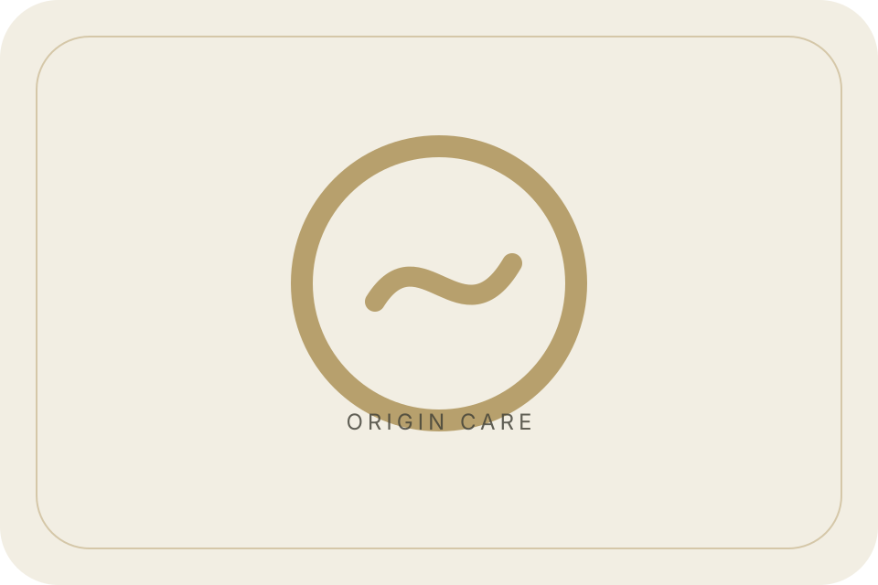
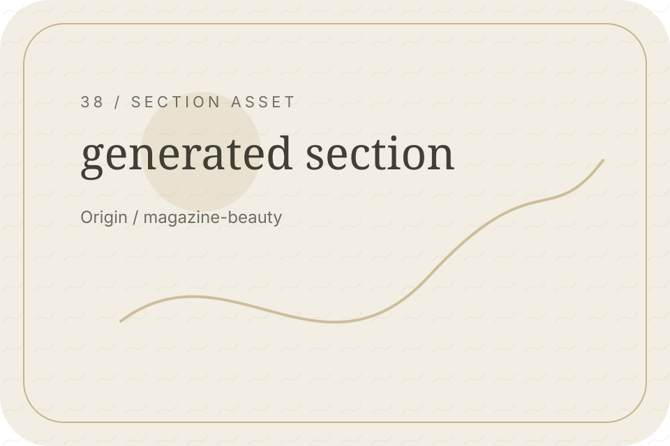
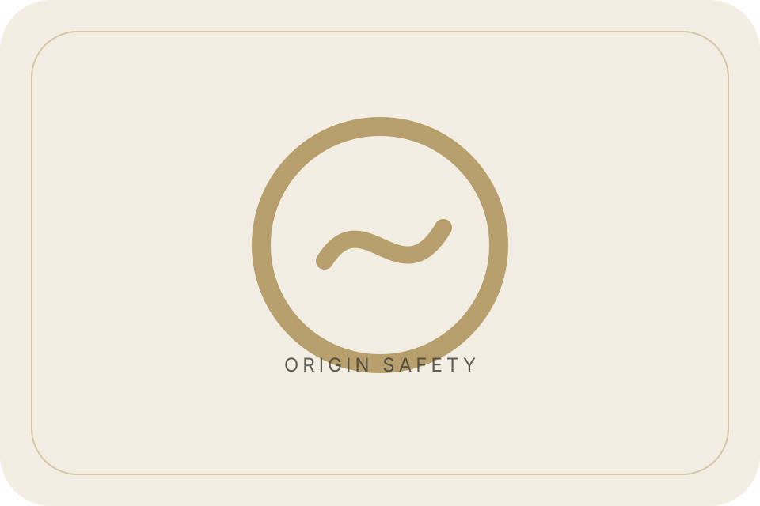
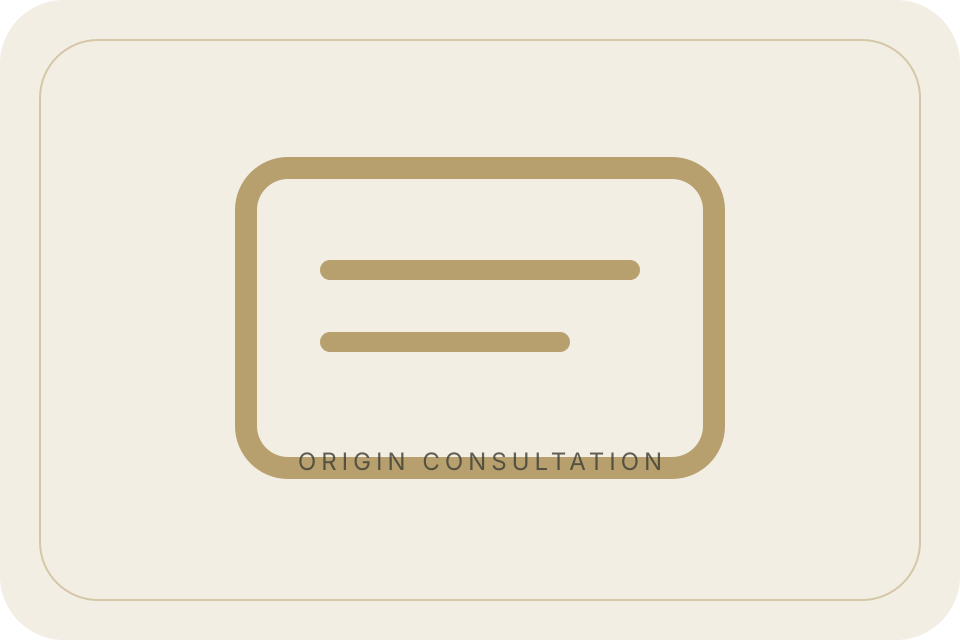
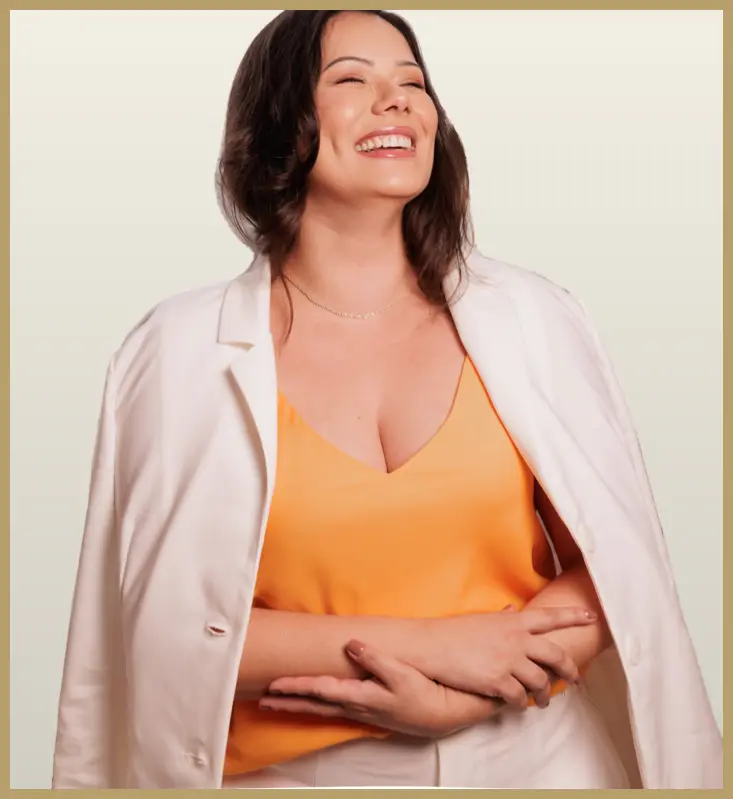
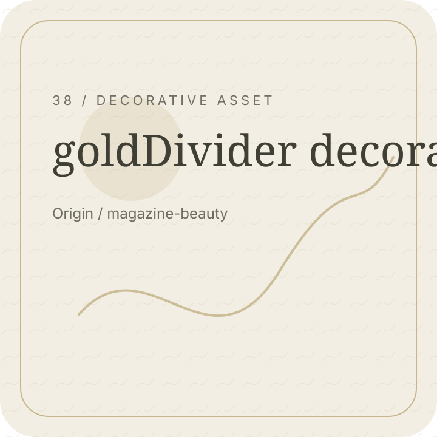

Care
Attentive guidance.
Origin / Mission Hero
To make aesthetic guidance feel careful, clear, and responsible.
Origin / Responsible Practice
This site avoids exaggerated promises and unsupported proof.

Origin / Consultation Path
A consultation can help clarify your next step.
Origin / Evaluation Leads
Good decisions begin with understanding the person, not rushing the answer.
Origin / Care Philosophy
Each step should feel considered, personal, and realistic.
Origin / Brand Values
Care, trust, safety, and naturality guide the experience.

Attentive guidance.

Clear explanations.
Responsible boundaries.
Natural confidence.

Origin / Human Trust
The experience should feel personal, respectful, and clear.

Origin / Statement Break
A calm process helps better choices.
